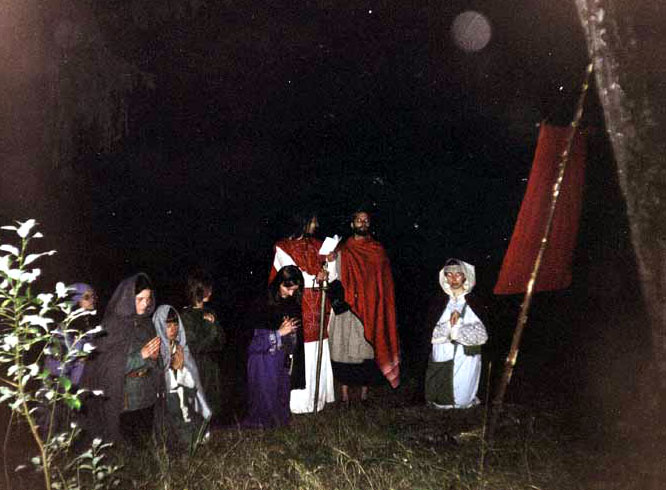
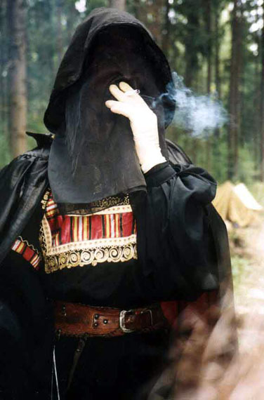

Warrax
Как два DM’а на ролевую игрушку ездили
(игра называлась "Земля святых и ученых" http://www.aquavitae.narod.ru/irelandbiblio/lss.htm, 2002 г.)
|
"Многое есть на свете, друг Горацио, что и не снилось нашим муд..." © В. Шекспир |
Перед тем, как написать нижеследующий отчет об игре, я считаю необходимым объяснить, как мы (я и Вейдер) на эту игру попали. Поясняю: исключительно по протекции отдельно взятых мастеров, которым захотелось поиздеваться то ли над нами, то ли над остальными игроками. Над кем именно – осталось загадкой.
Началось все с того, что мне предложили проконсультировать тему "а какую альтернативу можно провернуть христианству в Ирландии времен Патрика, если туда еще и магии добавить?". И прежде чем я успел начать лекцию, мне сделали предложение: а, может, я это в полевых условиях сам все и объясню? Я немного подумал – и согласился. Дело в том, что после того, как мне все же объяснили разницу между ролевиками и толкиенистами чуть больше года назад (Морена, если читаешь, то мой TNX), я научился их различать. Но согласился на такой экстремизм только в том случае, если со мной поедет мой друг Вейдер. Я был в курсе, что он полным ходом делает себе доспех – самое то к игрушке. И вдвоем – однозначно не скучно. Переговоры закончились удачно, и, несмотря на мелкие накладки, мы все же выехали, хотя антураж соблюсти полностью не смогли – пошитая мне модельная ряса была без пояса по забывчивости кутюрье, в связи с чем пришлось выдернуть ремень из джинсов и прицепить к нему пчелофон в футляре (сошел за магический кристалл для общения с высшими силами, одна из которых пыталась заказать мне апдейт своего сайта прямо среди леса в субботу), а Вейдер так и не отловил Змея, у которого был его пошив. В результате, отчаявшись выяснять, куда уполз Змей, он одолжил у товарища другой пошив, такой зелененький, который изначально шился под эльфа. Но не суть – главное, мы собрались и выехали.
Ну и, естественно, потом приехали. Маршрут был понятен, поэтому до места дошли без приключений. Что приятно порадовало – это обстановка в лагере. Фанфар не было, но нас везде представляли в виде "это те самые Варракс с Вейдером", что сначала тешило ЧСВ, а потом внушало некие сомнения – так как после этой фразы представляемые не спешили знакомиться, а быстро-быстро убегали подальше.
В общем, нас привели в самый дальний угол полигона и предложили там остановиться. Что нас вполне устраивало. Некоторое время мы там пообживались, собирая лапник и дрова, а затем пошли на парад, который должен был быть вечером.
С парада официально начиналась игра.
Четверг
|
Любой человек имеет право на глупость Всемирная декларация прав человека |
Первое, что сделал лично я, придя на парад – это прислонился к какой-то елке, еще точнее – к смоле, которая на ней была. Предупреждать надо, я же в лесу лет семь-восемь не был... Но не существенно. Парад прошел достаточно быстро и с юмором. Понравилось. Но вот дальше начались странности.
Во-первых, сразу после парада христианская община устроила свой молебен прямо рядом с мастерятником. Я, честно говоря, не понял – если это по игре, то зачем так долго и занудно, а если по жизни – так что, другого места не нашли? Мой нежный слух, воспитанный на Immortal, NON, Deicide, King Diamond и прочем, такую музыку (точнее, акапеллу – хор без инструментального сопровождения) воспринимать категорически отказался. Кроме того, к нашему удивлению, несмотря на то, что начало игры было заявлено на 19:00, а парад и так начался на час-полтора позже, никто играть не собирался. Все дружно устроили пляски вокруг друидского костра, которые и продолжались до самой ночи. В тот момент мы еще не поняли, что народ в основной массе приехал для чего угодно, только не для игры (с т.з. AD&D). Как акцентировано в названии статьи, я оцениваю происходившее как DM (Death Manager, если кто не в курсе), и к раскладу "положить на ДМа и немного подурачиться" не привык.
|  |
|
Христиане на общей молитве. |
Таким образом, повзирав на это минут нанадцать и убедившись, что все не занятые дураковалянием у костра играют в локальную игру "кто задаст мастеру по магии наиболее идиотский вопрос", мы удалились к себе на стоянку. Уделив некоторое внимание беседам на общефилософские темы за "Старкой", мы легли спать.
Пятница
|
На компьютере с параллельной архитектурой может выполняться несколько ошибок одновременно. |
Утро пятницы началось, как это происходит всегда по пятницам (в частности), с просыпания. И кто этот процесс придумал только... Но не суть. Сразу после завтрака, чистки зубов и прочего мы внимательно изучили свои аусвайсы, по AD&Dшной привычке их замеморайзив. Да, я еще не объяснил, кто мы и что мы были на игре.
Дело в том, что с появлением христианства исконные боги Ирландии были весьма удивлены тем, что некоторые ирландцы не попадают после смерти куда полагается, а бесследно исчезают. О новой религии было известно только со слов язычников-ирландцев, которые видели отдельных христиан. Поэтому в Ирландию была снаряжена парочка посланцев богов с целью выяснить, что это за новая религия и что происходит с ее приверженцами после смерти. При этом они, то есть мы, сами не должны были вмешиваться в то, что происходит, а лишь вынести вердикт: хотят ли ирландцы жить по заветам предков, хотят, но не все или вообще не хотят. Соответственно, путь в послесмертие по-язычески в результате мог быть закрыт полностью либо частично по результатам расследования.
Для выполнения своей миссии мы были хорошо вооружены. Я не про вейдеровский меч (хотя он и хотел привести не муляж, с которым приехал, а нормальный боевой клинок, но Майк сказал, что мастер по боевке от этого получит на месте сразу три-четыре инфаркта). Я про магические способности. Перечислю для тех, кому интересно: Dispel заклинаний 1-го и 2-го уровня – неограниченно, разговор с душами мертвых (если они не христиане) – неограниченно, заклинания 1-го и 2-го уровня автоматически не воздействуют (отыгрывать мы это планировали приблизительно так: "– А вот я вас спеллом! – Не убедительно..."), свободный проход в языческий мертвятник и обратно, неограниченное исцеление тех, у кого есть метка иного мира (включая нас, разумеется). Ну и были еще некоторые способности, ограниченные в кол-ве применений в день: воскрешение несущих метку иного мира – 3 раза в день, кого угодно – раз в день, исцеление обычного ирландца – 4 раза в день, Dispel 3-го левела – десять раз в день. Да, чуть не забыл: еще в целях самообороны, т.е. при попытке причинения нам вреда, мы имели право на PWK (Power Word Kill, если кто не в курсе) неограниченно (т.е. декларативное отправление в мертвятник), а кроме того могли раз в день послать Ангела Смерти абстрактно ("да ну тебя с таким дурацким предложением..."), и раз конкретно ("нет, ты лучше пойди и скажи то же самое тому, кто тебя послал"). Еще была иммунность к ядам, у меня – Forget, а у Вейдера – Cause Fear. Ну и помимо всего прочего, даже если нас отправляли в мертвятник – мы выходили оттуда немедленно, теми же персонажами и с полным знанием того, каким образом и из-за кого мы потеряли столь ценное время. В общем, кто к нам с мечом придет, тот в орало и получит.
Таким образом, нас лучше было не трогать. Тем более, что сами мы агрессивно себя вести были не должны (если ирландцы решили бы хором покреститься – то каждый сам кузнец собственного геморроя), и даже применять свои способности на благо ирландцев могли только по обоснованной причине – просьбе тех, кто чтит своих богов, а еще лучше – доказал это на практике.
В общем, пока мы все это осмысливали, приехал Бран (Дмитрий), который у нас планировался местным аборигеном-разведчиком, нанятым по причине того, что нас в этой местности не было несколько сотен лет. Некоторое время заняло знакомство (Когда Майк предупредил Дмитрия, что напарники у него первый раз на игре, то он ожидал увидеть парочку 17-летних, а отнюдь не нас, средним возрастом в 30), установка палатки, накормление Брана завтраком и прочее. После чего он отправился на разведку собирать информацию, а мы пошли сами по себе наблюдать, что делается.
Вот тут мы поняли главное отличие AD&D от полевки. Точнее, поняли не сразу... Сразу мы поняли то, что у нас нет стандартных AD&Dшных приемов. Скажем, мы не могли войти в город просто пошариться по магазинам и т.д., и вообще было не понятно, что делать. Погуляв часик, мы просто забрались в лес подальше и беседовали до обеда.
Свою ошибку мы поняли на пути к лагерю, когда перед самым сидятником нам навстречу попались двое ирландцев. Причем не просто попались, а начали интенсивно здороваться и предлагать обмен информацией – кто что знает и прочее. Если бы у меня в AD&D кто-то подошел бы к прохожему на улице с вопросом "А откуда вы и что тут делаете?" то об этом странном субъекте через несколько часов знало бы полгорода, а стража – еще раньше. Как оказалось, в Ирландии (или все же на полевках?) такое – в порядке вещей. Что потом нам подтвердил наш проводник в лагере, который, в отличие от нас, имел богатый опыт выездных игрищ. В общем, кое-как отмазавшись, мы дошли до лагеря, все из себя удрученные и в непонятках – что делать дальше.
Бран уже ждал нас в лагере. Кстати, о именах. Майк, ты мне можешь сказать, на... в общем, зачем мы с Вейдером изучали распечатку в 52 (пятьдесят два) листа с ирландскими именами, если ты потом уже на игре сказал "а зовитесь по жизни, проще будет"? Нет, чтобы заранее предупредить. Если кому интересно, то Вейдер выбрал себе имя Кейси, я – Семиаз (и очень удивился, найдя это имя среди ирландских). Ладно, не будем отвлекаться.
Пообщавшись с Браном, мы несколько повеселели: цели и задачи были ясны. На карте, которую проводнику выдали в мастерятнике, была видна первоочередная цель, а именно – библиотека. Бран сразу пояснил, что там могут быть ценные сведения, более того – могут быть критичные ценные сведения, которые можно бы оттуда и украсть, если будет иметь смысл.
Кроме того, Бран заявил, что ходит слух о том, что в Ульстере некий мудрый филид решил принести себя в жертву во имя возвращения древних богов. Поскольку древние боги никуда не уходили и не собирались, ситуация показалась нам весьма любопытной.
Таким образом, после обеда мы с Вейдером решили отправиться в библиотеку, а затем – в Ульстер отыскать филида. Бран же продолжал общую разведку. Кроме того, ему было дано задание прикупить у какого-нибудь короля графство там или баронство, чтобы нам представляться "мы оттуда-то". Потом это задание отменилось, так как мы слегка привыкли к отличиям от AD&D и поняли, что даже самые подозрительные личности могут расхаживать без всяких подозрений.
Итак, посмотрев на карту, мы легко поняли, что библиотека – это чуть севернее бардов, левее Коннахта. Но на деле оказалось не все так легко.... Это уже через день нам объяснили, что на карте был обозначен лагерь бардов по жизни (зачем, спрашивается?). В общем, первое игровое место, на которое мы вышли, выглядело как нечто обнесенное табличками с непонятными надписями, внутри сидела девушка с арфой и задумчиво перебирала на ней струны.
– Ага, значит, это – барды, – подумали мы.
– А вот фиг вам, – подумала арфистка.
Но мы эту мысль не уловили и пошли дальше.
После некоторого времени, затраченного на прочесывание леса, мы вышли несколько правее к Ульстеру. Точнее, мы тогда еще не знали, что это Ульстер, а просто вышли недалеко от некоего города. В отличие от прочих городов, мимо которых мы ходили, в этом нами наконец-то заинтересовались. Поскольку графство приобретено еще не было, мы поняли, что будут сложности.
Но мы оказались не особо проницательными.
Итак, нам навстречу из города вышло несколько суровых ирландских мужиков. Причем, следует заметить, действительно прилично одетых – доспехи, оружие и проч. Мне понравилось.
– Кто вы такие?
– Варракс и Вейдер. А вы не подскажете, как пройти в библиотеку?
После этой классической фразы разговор вертелся вокруг "гм, а где это такое могло бы быть?" вместо "а что это вы тут, такие подозрительные, делаете вокруг нашего города?", как мы ожидали.
Мирно попрощавшись, мы отправились прочесывать лес еще раз. И еще раз. Вам, может быть, смешно будет, но мы пять раз прошли по участку выше отшельника и левее Ульстера, разыскивая библиотеку... Догадаться до того, что у отшельника, который там, по нашим сведениям, жил, – библиотека и есть, было не сложно. Но вот до того, что мастера подсунули нашему проводнику неверную карту, мы додуматься не смогли... А девушка с арфой все маскировала жилище отшельника под стоянку бардов. У нас уже возникло ощущение, что она там живет, в библиотеке, но мы эту мысль отогнали (какой же это отшельник, если с арфисткой живет?) и пошли прочесывать местность как раз на пятый заход.
В конце концов, когда нам это занятие уже окончательно надоело, мы решили выяснить, что же произошло в Ульстере. Еще раз выйдя к знакомым стенам и повторно очень содержательно ответив на вопрос "а кто вы?" называнием своих имен без каких-либо дополнительных подробностей, мы задали свой вопрос. На что нам ответили, что таки да, такое было. Только не в Ульстере, а в Коннахте, и не мудрый филид себя хотел добровольно в жертву принести, а вовсе даже его собирались, причем весьма цинично и насильно. Но он, не разделяя энтузиазма собравшихся, сбежал и скрывается в Таре.
Слушая всю эту историю, я опять же удивлялся – рассказывать важные сведения каким-то проходимцам из леса, о которых ничего не известно, кроме имен (и то могут быть выдуманы)... за это же экспу резать надо!
|  |
|
Риг-филид Ирландии Дубтах |
В общем, оправились мы в Тару искать филида. Для начала мы немного заблудились и пришли в Лейнстер. Там успели перекинуться парой слов на тему "А, Тара – это в ту сторону, а христиане к нам приходили, забавные такие", после чего к стенам подошли какие-то личности с парой пленников и начали торговаться на тему "а сколько за голову дадите?" Резонно рассудив, что сейчас там не до нас, мы пошли в Тару. Филида там не было, но он вскоре подошел и подтвердил, что таки да, его совсем уж собрались захолокостить нафиг, но он убежал благодаря природной сметке, ловкости и любимой девушке. И действительно его хотели принести в жертву во имя возвращения древних богов, он сам это слышал. Плюс к этому претендентка на трон (версию "а не разборки ли это ради трона?" он решительно отверг) была полусидом, как проговорились подкупленные стражники. Сиды нас особо не интересовали, а вот "возвращение древних богов" – весьма. Забегая вперед, скажу, что разработке версии "а зачем кто-то возвращает богов, которые никуда не девались, и, следовательно, это не те боги, а какие-то еще более древние, но какие тогда?!" мы уделили значительное время совещания по вечером. Про Лавкрафта и его Old Ones никто вслух не вспоминал, но такая версия у меня в голове вертелась, несмотря на свою парадоксальность. Когда потом оказалось, что филид просто что-то недослышал или не так интерпретировал, а зарезать его хотели вовсе не древним богам, а во имя возвращения какой-то древней королевы для профилактики, а реально – именно из-за дележки власти, я уже хотел было найти его и возмутиться на тему "какой болван тебе сказал, что ты мудрый?!", но вовремя вспомнил, что словосочетание "мудрый филид" было в контексте слуха, три других утверждения которого оказались ложными, почему четвертому быть исключением?
Позже мы еще раз зашли в Лейнстер, поговорили на тему христианства с Колоном О'Ри (друидом) и полностью сошлись во мнениях, что все это весьма и весьма подозрительно.
Разик видели на встречных курсах и группу христиан, возглавляемых епископом Палладием, но молча разошлись.
Кстати. Я премного извиняюсь, но кто привязал колокольчик к посоху епископа?! Во-первых, исторически епископские посохи таковых украшений не имели. Во-вторых, посохи с колокольчиками носили прокаженные. В-третьих, конечно, христиане – мудозвоны, но зачем же это так явно показывать?
Собственно, больше ничего значимого в пятницу не было, мы зашли еще раз в Лейнстер, пообщались с друидом на тему христианства, пришли к полному согласию и обещали держать друг друга в курсе событий. Вечер мы провели за воспоминаниями Вейдера на тему "как я с толкиенистами на тему фехтования знакомился" (Он меня тык-тык-тык деревянной палкой, обозначающей двуручник, на вытянутой руке, и говорит – ты убит! Я в тебя три раза попал! Я возмущаюсь: да ты меня максимум поцарапал. А он: правила такие, три хита снял! Ладно, говорю, хорошо. Давай еще раз. Пропускаю мимо себя и р-р-раз! – по спине со всей дури металлическим муляжом но-дачи. Он: ой-ой-ой, я убит! – Не-е, ни фига, у тебя еще два хита осталось! Иди сюда, родимый...) , а также Димы на тему "как я изучал экономику такой-то игры" (Иду я, значит, из Мордора, в капюшоне – половина валового национального дохода Средиземья, а рядом идет назгул по обороне в охранниках, поскольку его назгул по экономике послал сопроводить такой важный караван).
Кроме того, оказалось, что в Лейнстере христиане предательски освятили священную рощу, за донесение о чем Диме был выдан почетный меч местного производства.
В общем, допили "Старку" и легли спать около трех часов вечера. Напоследок Дима сказал, что есть так, как ужинали, – это снобизм, попса и тренд, а вообще на играх спят по четыре часа и едят одну банку тушенки в сутки на троих.
Суббота
|
– Эй, мужики! Вы откуда будете? – Мы? Мы даже из горла будем! |
Неспешно проснувшись что-то около 11-12 часов, мы с Вейдером обнаружили, что наш проводник все еще хочет спать. В общем, пока мы разбирались с завтраком и прочим, он досыпал свои заявленные четыре часа.
Далее Бран отправился на разведку на тему "а что там делают христиане по городам?", а мы прогулялись в Лейнстер к друиду для профилактики. Не узнав ничего нового/ценного, мы наконец-то дошли до отшельника, поговорили с ним на тему "А что вы, ваше отшельничество, думаете на тему пришлой религии белого бога? А то наши провидцы, знаете ли, такого нарассказывали, что просто ой". И были достаточно удивлены ответами в стиле "А мне по фигу ваши неувязочки". Даже когда мы ему однозначно и весьма толсто намекнули, что в результате неувязочек придут кранты всем друидам, он опять же высказался в смысле "значит, такова моя судьба, и не мешайте мне отшельничать под арфу". В общем, странно все это... Я как-то привык, что отшельники и проч. – это достаточно ключевые персонажи в игре, но никак не пофигисты в стиле "игра сама по себе, я сам по себе".
Библиотекой же мы воспользоваться не смогли, так как алфавит успел измениться с тех времен, как мы были в Ирландии последний раз.
В Коннахт мы не решались заходить вообще – поскольку метод "спросить в лоб" нами не был освоен до самого конца игры. Теперь я уже понимаю, что если бы мы зашли в Коннахт еще в пятницу и спросили бы у населения: "Это не вы тут, случаем, своих филидов режете?" они радостно все подтвердили бы и добавили подробностей из первых рук.
После отшельника мы отправились посмотреть, что делается в Таре.
В Таре делались выборы короля.
Как мы потом поняли, выборы короля – это народное ирландское развлечение, поскольку они проводились за игру два или три раза. В общем, пока там все это выбиралось, мы просто курили в стороне – политика нас никоим образом не интересовала. И вот в критический момент, когда претендент доедал принесенного в жертву быка (большую банку не разогретой тушенки, причем свиной) ложкой, а вокруг собирались друиды с целью поздравить, увековечить и все такое, мы краем глаза (я – левым, Вейдер – правым) узрели слепца с проводником. И тут нас осенило – провокация!!!
Легенды об исцелении христианами слепых, прокаженных и прочих категорий больных, кроме умственно отсталых, широко известны. И вот мы поняли, что сейчас будет: во время коронации подойдут христианские священники, в самый торжественный момент закричат: "Ага, попались!!!", то есть, я хотел сказать: "Аллилуйя, подопытный прозрел!", после чего объявят, что новый король и все население Тары оптом в связи с этим чудом весьма угодны новому богу, ну и так далее. Несмотря на свой нейтралитет, мы все же были посланцами языческих богов, и такого обмана допустить не могли. Поэтому мы как можно незаметнее отловили в толпе Брана, объяснили ситуацию и отправили его с заданием подвести сюда калеку для профилактического исцеления, пока это не сделали христиане по идеологическим мотивам.
Параллельно мы исследовали еще одну линию: нам стало известно, что, во-первых, есть в Ирландии некий бессмертный, во-вторых, есть персонаж, у которого странные белые руки и вместо лица – чернота под капюшоном (понятно, что не под вуалью же он по игре ходил...). Естественно, мы предположили, что это – один персонаж, а исходя из его внешности, строили массу предположений – лич, вампир или кто еще покруче?
Когда мы его увидели и нас с ним познакомили, он представился верховным филидом. Но нас интересовала отнюдь не его должность, и, поговорив всякими намеками (в которые они ни разу не врубался, почему – мы поняли только потом), мы отложили разговор. Сразу скажу, что больше мы так и не общались, а уже после игры Майк сказал, что белые руки нежити и прочий антураж у гл. филида были "просто так". Я не имею ничего сказать по поводу, кроме того, что слабо представляю, как можно три дня ходить в хирургических резиновых перчатках "просто так" и что паранджа на филиде ни у кого в Ирландии не вызывала вопросов.
Разойдясь с филидом, мы обнаружили, что Бран все еще стоит у стенки. С внутренней стороны. Поинтересовавшись, а чего это он, мы выяснили, что у стен Тары собрались файтеры Ульстера, которым чем-то не понравился новый король. И выходить Бран резонно опасается – как бы не получить топором по голове насмерть. Ситуация решилась просто: я его послал на выход, а сам стал рядом: если бы на него кто поднял оружие, то я мог вмешаться на тему "не трогайте нашего проводника!", и если бы после этого выпендрились на меня, то все хором пошли бы в мертвятник. Но все обошлось: при выходе из Тары Брана, ульстерцы расступились и пропустили его без проблем. А теперь подумайте, как это выглядело: во время осады опускают подъемный мост по просьбе иногороднего бродяги, он спокойно выходит, осаждающие вежливо дают ему пройти, не задавая ни единого вопроса...
Что интересно, стены в Таре были иллюзорные. Когда на наших глазах сквозь стену прошел приблизительно двадцатый житель, то я не выдержал и спросил: а как? На что был получен ответ "а через стену, обозначенную вот таким цветом бантиков на веревочке, друидам можно!". Мы просто поразились обилию друидов в Таре, а как называются те могучие кастеры, которые ходят через стены с другим цветом бантиков, даже не решились спросить.
В общем, дел у нас особых не было, и мы остались стоять на месте. Тут я услышал некие завывания, обернулся и обмер: навстречу шла баньши. По всем канонам: очень красивая девушка, синий грим вполне четко обозначал потусторонность, ну а издаваемые звуки не оставляли никаких сомнений. Припомнив характеристики баньши по AD&D, мы поняли, что сейчас половина Тары должна помереть на месте, а половина – разбежаться прямо сквозь стены, тем более, что им привычно. Нас вроде это задеть не должно, но мало ли....
Однако на баньши никто не обращал внимания. Вообще. Что было, мягко говоря, странно. Впрочем, уже после игры я удивился еще больше: оказывается, баньши приходила не просто так, а к кому-то персонально, и когда она взяла его с собой, то окружающие решили посмотреть, куда это его ведут, и почти пошли следом, но их отвлекли. Во-первых, когда девушка кого-то забирает с собой и ведет от народа, то подглядывать – это вуайеризм какой-то, а идти для этого в мертвятник – по меньшей мере оригинально, это уже сочетание с некрофилией получается.
Пока мы наблюдали могучее население Тары, проходящее сквозь стены без каких-либо неудобств, вернулся Бран и сказал, что слепой отказался исцеляться.
На что мы с Вейдером хором возмутились и прочли проводнику лекцию на тему "как плести многоходовые интриги" – подойти, вежливо пригласить без указания цели, а уж там-то мы незаметно и исцелили бы. Он, оказывается, просто подошел и спросил: "Хочешь прозреть?", на что получил категоричный отказ. Поскольку нам было слабо понятно, как можно отказаться от излечения, мы окончательно уверились в том, что это – подстава. Собственно говоря, если бы не началась осада, то, думаю, мы рискнули бы просто пойти и внаглую исцелить. Но христиане не появлялись, файтеры бычились друг на друга, прочие жители ходили сквозь стены не хуже героев фильма "Чародеи". Так что мы решили, что пока коварный план провалился, и пошли пить чай. Между прочим, вышли мы через ворота, как и положено.
В кабаке выяснилось, что Бран там уже заработал себе репутацию, при которой он получал скидки такого размера, что ему было бы выгодно продавать все в кабак обратно по оптовым ценам. Собственно говоря, если бы игра продолжалась еще дня три, то ему бы уже доплачивали за то, что он там ест. Обратите внимание, что выторговал он это себе чисто из любви к искусству, так как деньгами мы обижены не были (посланцы богов мы или кто?). Скажем, после игры у меня в кармане оставалось 350 ирландских у.е.
После кабака мы с Вейдером лениво совершали моцион, думая, чем бы еще заняться. Вроде пора бы уже и с христианами пообщаться... В связи с этим устремлением задавались вопросы знакомым и незнакомым ирландцам:
– Не могли бы вы сказать несколько слов на тему христианства?
– Да я не в курсе. Спросите у них сами!
Но, как я уже писал, метод "спросить в лоб" нами так и не был освоен.
Положение спас Бран, который прибежал со сведениями, что в Лейнстер пришли христиане и всех с ходу прокляли. Нас это, естественно, заинтересовало. Христиане уже были раньше в Лейнстере, пили/ели у короля, в конце концов Палладия хотели даже принять в филиды и в знак уважения к его богу поставить ему на капище крест из фаллосов среди других идолов. А тут поведение так резко изменилось.
Причем, как было заявлено, это типа наконец-то прибыл Патрик. Поскольку исторический Патрик был весьма неплохим человеком, то реально Ирландия приняла христианство именно по принципу "у такого замечательного человека и бог должен быть вполне приличный". Достаточно сказать, что практиковалось частичное крещение – во имя Христа, но без отречения от языческих богов. В общем, образ исторического Патрика и проклятия как-то не увязывались друг с другом.
Приблизившись к городу, мы обнаружили друида, описывающего круги вокруг города. Увидев нас, он приблизился, повысил в чине от посланцев богов до самих богов, и обратился с просьбой посодействовать.
Мы, естественно, отказались от такой чести и поинтересовались, что произошло.
Нам объяснили, что это прибыл Патрик с епископом, они заявились в город, с ходу скастовали что-то такое, отчего все вокруг разбежались в страхе (примечание: свои аусвайсы читать надо, не было у них таких способностей), а потом на отказ принять христианство всем оптом и без промедления прокляли город – мол, будут у вас рождаться только мертвые и все такое. Причем покидать территорию города отказались напрочь.
 |
|
Друид Колон О'Ри, Брадах и Палладий |
Мы с Вейдером толсто понамекали друиду, что нас бы попросить помочь – оно самое то. Через некоторое время, достигнув устной договоренности, мы с друидом вошли в город. На земле лежал один труп, еще один весь из себя больной абориген, а посередине стояли христиане, которые нагло и цинично молились, оглядывая дело своих рук. Дело в том, что, пока мы шли, в Лейнстере успел родиться мертвый ребенок, они своими молитвами его воскресили, но он остался тяжело больным (христиане всегда были за убогих...).
Ситуация: народ волнуется, мать плачет, больные/мертвые лежат, христиане молятся, мы стоим и смотрим. Как писалось выше – мы могли многое, но для активного вмешательства нас надо было попросить что-то сделать для начала.
В конце концов нас наконец спросили – а что мы тут стоим. Да так, - сказали мы, - воскрешать пришли. Ну и лечить. И все такое. Но никто не просит – передумали, да?
Оказалось, что не передумали, просто тормозили.
Итак – мы воскресили сына короля и вылечили другого больного. При этом их отыгрывающие чего-то тормозили по жизни и оставались лежать на месте, пока их не пнул мастер по магии.
Логично, что после этого все язычники Лейнстера под чутким и мудрым руководством друида объединились в едином порыве на тему "вон иноземных захватчиков!". Тогда-то и была произнесена историческая фраза, услышав которую, я едва не сдержался, чтобы не засмеяться во всю глотку и нарушить тем весь антураж.
Итак: эпическая картина, специально для вас печатаю медленно, такие вещи смаковать надо.
Друид при общенародной поддержке произносит пафосную речь на тему "а пошли вы на свои корабли и отплыли обратно, быстро!!!"
На что то ли лже-Патрик (это был Брадах, но нам про него сказали, что это приехавший Патрик), то ли Палладий слегка с остолбенелым видом разводит руками и недоуменно-растерянно произносит: "Как обратно?!"
Я, к сожалению, не могу передать все оттенки произнесения, но это было нечто. Смесь искренней детской обиды с недоумением "а чего это они?".
В общем, одно это цирковое представление компенсировало мне всю поездку на игру.
Далее мы остались в городе, а христиане начали уходить. Точнее, их уходили – с толстыми намеками в виде наставленных копий. А Палладий при этом брыкался и сыпал проклятиями налево и направо, а также в других направлениях.
Короче говоря – если бы мне дали задание разработать, как бы христиане могли максимально неудачно сыграть, я бы не додумался до оптовой раздачи проклятий. Это вошло в моду веков на несколько позже. Кстати, был интересный побочный эффект: когда мы общались потом с друидами на тему видений наших провидцев, которые предрекали гибель всех друидов и прочие последствия христианизации, то очень весомым аргументом на тему, что предопределенности нет, а они в состоянии сами изменить будущее страны было как раз то, что провидцам образ Патрика виделся весьма обаятельным, а пришедшие христиане были явно не такие. То есть – картина мира уже изменилась.
Вернемся же к событиям в Лейнстере. Христиан уже выставили за дверь, в смысле – за ворота, а мы начали ждать, когда же нас попросят исцелить ребенка.
Ждем.
Мать плачет.
Подруги роженицы плачут.
Ребенок не плачет только потому, что это муляж.
Народ негодует.
Мы стоим.
И никто не просит исцелить.
В конце концов я не выдержал и несколько не по игре напомнил Бронетолику, что нас не мешало бы и попросить.
"Ну так бы сразу и сказали!" – произнес друид и тут же попросил. И мы тут же исцелили. Проблема-то...
Далее нам преподнесли почетную чашу вишневой настойки, мы поговорили на тему "с христианами надо что-то делать", причем разговор вертелся в основном вокруг методов, включая расчлененку, а что именно – под сомнение не ставилось.
Но тем не менее, нашей целью было не искоренение зачатков христианства в Ирландии, а выяснение – куда деваются души христианских умерших? Поэтому мы посовещались и я решил осуществить гениальную идею (одной из граней бриллианта моего характера является скромность, и я могу говорить о ней часами) – отловить христианина, по всем понятиям его прирезать, но не просто так, а в священной роще; все друиды и т.д. поставят защитную сферу, чтобы его душа не улетела. Ну а там можно проследить, прицепить "жучка" – вариантов много.
Друид Колон немедленно поддержал идею и сказал, что нас давно хотел видеть верховный друид. Мы были только "за", но решили сначала зайти в кабак, на что друид радостно заявил "наши люди, истинные посланцы богов – сначала в кабак, а уже потом по делам!"
Уже по пути из Лейнстера в кабак у нас появилась нормальная AD&Dшная заморочка – расчет действий противника и профилактика таковых. Собственно, с нашим арсеналом на борту нам бояться было особенно нечего (максимум – убьют сразу обоих и ограбят, но ведь вернемся же сразу и все отберем обратно с процентами). Но стало наконец-то интересно: по нашим расчетам, христиане, увидев, что мы им все испортили, должны были немедленно нами заняться
Скажем, я бы на их месте предпринял бы следующие действия:
• Нанял бы разбойников нас вынести (что за конкуренты по воскрешениям?);
• Нанял бы кого-то проследить за тем, как нас будут выносить разбойники – оценить наши тактико-технические характеристики;
• Произвел бы разведку и сбор слухов на тему "а кто это такие и чем они тут занимались?";
• Совершил бы групповой молебен на тему "Боже мой, дай нам знание о сих супротивниках и ваще помоги чем сможешь".
Однако мы были всем, мягко говоря, безразличны. Кроме разве что друида Лейнстера О'Ри, с которым у нас наступил полный консенсус и прочее взаимопонимание.
Уже в кабаке мы выясняли, что пока мы там лечили больных детей и занимались прочей фигней, на выходе из Лейнстера лже-Патрика зарубил напополам некто, выскочивший из кустов. Что интересно – о том, что был зарублен заодно и Палладий, мы узнали часа через три-четыре реального времени, хотя события разделяло несколько секунд.
Небольшое отступление на тему ролеплея, мотиваций и прочего. Как мы позже выяснили, сие полезное для Ирландии дело совершил некий Коннор О'Ши, с которым мы позже хотели пообщаться, но не успели. С использованием постигровой информации стала известна мотивировка народного героя, которую он выразил приблизительно так: "Я увидел, что это дерьмо приплыло в мою родную Ирландию с дерьмовыми намерениями принести сюда всякое дерьмо, и я был бы последним дерьмом, если бы дал возможность свершиться этому дерьму".
В общем, лично я считаю мотивировку О'Ши вполне адекватной. Однако своими действиями он благополучно завалил бы всю игру, так как единовременно вывел из строя все христианское начальство. А христианская паства совершенно честно отыграла стадо без пастуха – сбилась в стойле и не предпринимала никаких попыток хоть что-то делать. Таким образом, в обоих случаях налицо ситуация, когда отыгрыш был направлен против игры как таковой. Впрочем, по внеигровой информации, христиане свое поведение отыгрывали скорее по жизни...
Но почему сослагательное наклонение, спросите вы? А потому, что это, как оказалось позже, не играло никакой роли. Христиане после бесчинств в Лейнстере были фактически поставлены вне закона – и я не вижу, честно говоря, для них способов обрести другую репутацию за оставшееся время. Так что к народным ирландским развлечениям типа выборов короля добавилась охота за христианами. По нашим подсчетам, Патриков (включая лже-Патрика, участвовавшего в вышеописанных событиях) насчиталось аж три штуки. Их стабильно резали по мере появления, и мы их даже не видели.
Стоит заметить, что резали их уже даже не по игровым мотивам, а чуть ли не просто так – скажем, я не могу понять мотивировки бардов, зарезавших Патрика Второго тремя кинжалами в спину, особенно, если учесть, что для ирландца того времени убийство в спину было величайшим позором, а они только вышли из мертвятника и не успели с ним даже познакомиться.
Да, кстати, об убийствах в спину.
Пока мы занимались своими делами, Бран проводил разведку – короче, исполнял профессиональные обязанности. И вот, когда он зашел в Тару, ему предложили что-то выпить, причем не по игре, поскольку это была пара мастеров. Я не буду комментировать то, какое право имеют мастера вмешиваться в игру лично, хотя я в натуре ни разу не понял.
В общем, через часик после этого Брану была вручена заражалка: получатель такой-то, вы влюбились в деву такую-то, просьба либо явиться к 20:00 в указанный пункт сбора в соответствующем состоянии, либо помереть от тоски.
Оказалось, что король Тары запутался в своих женах и невестах и хотел одну сплавить в другое место, для чего всем случайным прохожим предлагалось выпить приворотного зелья – разумеется, под видом невинного компота или чего еще.
Несмотря на явную неигровуху в плане заражения, нас с Вейдером этот эпизод развеселил, и, когда Дима, цедя сквозь зубы то, что он думает по поводу короля Тары, самого города, мастеров в общем и в частности, а также любимой женщины (обычно про них такое не говорят), отправился на розыски своей обреченной, то есть, извините, нареченной, мы нашли на турнире, который тогда проводился возле Тары, самого умелого филида и хотели заказать ему песню в честь невесты друга. Однако филид буркнул "потом" и убежал. Как позже оказалось, он тоже что-то не то съел или выпил и считал себя истинным королем Тары, так что ему было не до песен.
И тут нам доложили, что наш проводник отправился в страну мертвых. Оставив на потом выяснение "кто посмел?", мы побежали его выручать, благо возможность такая была, как вы помните из описания наших ТТХ.
Как потом выяснилось, Бран пришел по повестке просто влюбленный весь, как и положено, и обнаружил там еще одного претендента на руку, сердце и прочие органы, который выпил того же самого. В общем, что-то они там не поделили, и Бран зарезал конкурента, причем по старой воровской привычке ударом в спину, что для ирландца было несмываемым позором.
Быстро, но по всем правилам похоронив убиенного, положив к нему в могилу меч в качестве признания того, что был не прав, отчего у трупа округлились глаза (в Ирландии меч – это очень большая ценность), Бран глянул на часы – до окончательной влюбленности оставалось десять минут – и отправился в мастерятник вызывать Ангела Смерти.
Мастера удивились, но вызвали. Ангел Смерти явился и вопросил с некоторым удивлением – а в чем, собственно, дело? На что последовало пояснение – так мол и так, меня тут обязали влюбиться, а я нечаянно зарезал соперника достаточно коварно для того, чтобы помереть от стыда, не доводя дело до женитьбы.
– А ты христианин или язычник? – вопросил Ангел Смерти.
– Конечно, язычник! – гордо ответил Бран.
– А ты доказал это на деле? – строго нахмурил брови на черепе посланец Смерти.
– А то! – последовал бодрый ответ и далее – перечисление всех полезных дел, которые Бран совершал с нами и без нас, начиная от того, за что ему вручили меч в Лейнстере.
Ангел аж заслушался и присел рядом на травку, отложив косу и подперев подбородок рукой.
Когда рассказ подошел к концу, он встал и пригласил следовать за собой.
На переходе через местный Стикс мы с Вейдером и догнали эту процессию.
Как я обычно говорю – я интеллектуал, а не интеллигент, Вейдер - тоже, поэтому начался разговор без всяких расшаркиваний:
– Эй, стоп! Положь, где взял!
Ангел слегка офонарел – ему же не было известно, кто мы такие, а обычно ирландцы, причем независимо от вероисповедования, если и видят Ангела Смерти, то его слушаются.
– А вы, извините, кто такие?
– Варракс и Вейдер! А это – наш проводник! Давай его сюда!
– Никто не имеет права... – начал топорщить крылья Ангел.
– Мы – имеем!
Видимо, сказано это было достаточно весомо, так крылья вернулись из боевого положения в транспортное, и последовал контраргумент:
– Не виноватый я, он сам за мной послал...
Такого мы не ожидали и несколько удивились. Но тут же приняли компромиссное решение, поскольку драться с Ангелом Смерти у нас мыслей не было. Впрочем, не потому, что мы его боялись – с ним было бы легко справиться, как это не странно выглядит на первый взгляд. Помните, у нас была способность отправить назад Ангела убить того, кто его послал? Вот и отправили бы его в случае чего к самому себе, если бы возник конфликт – так бы и завис в мертвятнике до конца игры, так как убить Ангела Смерти не может никто по определению, включая его самого.
Но это я отвлекся. Итак, компромисс:
– Тогда мы пойдем вместе с вами.
Это еще больше удивило Ангела, но он только недоуменно пожал крыльями и ничего не сказал.
В мертвятнике Брана слегка поспрошали на тему "хочет ли он жить", мы за него поручились, и нам его выдали обратно в целости и сохранности.
В общем, дальше делать особо было нечего, Бран пошел по делам, а мы пошли к главному друиду.
Того на месте не оказалось, и нас попросили подождать. Впрочем, ждать пришлось не долго, и после того, как главный друид прибыл, мы начали докладывать свою мысль о необходимости исследования того, куда деваются души христиан после их смерти. Опять же мы обнаружили трогательное единодушие о том, что надо делать, и наша идея была принята на "ура", особенно после того, как приполз в виде змея один из друидов и сказал, что только что христиане убили молнией его ученика.
Заручившись поддержкой главного друида и присутствовавших менее главных, а также их обещанием припахать на эту тему всех филидов, мы отправились в кабак.
Собственно, мне туда не особенно хотелось – я не умею пить чай в таких количествах, как Вейдер. Это не пиво и даже не водка, в конце концов. Но за компанию я пошел.
В кабаке мы встретили Брана, который с мученическим видом пытался догрызть закупленный оптом за бесценок гигантский кусок сыра, не догадываясь попросить о помощи окружающих.
Сели мы пить чай и обнаружили, что за столом сидит персонаж, которого мы раньше не видели. Это был христианский отшельник, которому было озарение, что он нужен уже не в качестве отшельника, а просто в Ирландии. В общем, ИМХО его и надо было выпускать Патриком с самого начала: на эту роль он однозначно тянул. Мы беседовали где-то с час на тему христианства, хотя и сбивались иногда (mea culpa) на неантуражные высказывания типа "остенсивное определение". Кстати говоря, отшельник квалифицированно заявил, что христиане себя не ведут так, как в Лейнстере, и это были какие-то самозванцы. К концу разговора к столику прибилась стайка христианок, и тут мы поняли, почему нас никто не пытался убить, отравить или хотя бы проследить за нами: оставшись без руководства, христиане просто не знали, что делать. И, подойдя к отшельнику (который, кстати сказать, был внешне очень похож на иконописного Иосича), они с ходу спросили: а не вы, случаем, теперь нашим Старшим Братом будете? Другими словами, конечно, но смысл был именно тот...
Дима тут же зашептал нам на ухо, что эта стайка – очень подозрительна, ходит везде, ничего вроде по игре не делает, просто наблюдает. Христианские шпионы, однозначно. Однако это просто было небольшое стадо без пастыря...
В общем, оставив отшельника допивать чай в компании свежеприобретенных прихожанок, мы отправились к себе в пожизненный лагерь, по пути зайдя к сидам в холмы и договорившись с Джарефом на предмет поддержки в вопросе исследования христианской души – куда она девается? Королю сидов идея тоже понравилась, и мы заранее потирали руки: на исследование проблемы были настропалены все кастеры Ирландии – друиды, филиды и сиды. Вечером мы думали разрешить волновавшую нас проблему и выполнить задание богов.
 |
Но не тут-то было...
Когда вечером мы зашли в Лейнстер по старой привычке пообщаться с друидом, то оказалось, что он (как и почти весь город) собрался идти на свадьбу. Мы его пригласили вечером в лагерь по жизни в гости и отправились на место проведения обряда. Сначала нам казалось, что это быстро, и даже решили подождать полчасика, пока все это закончится. Даже получили удовольствие от явившихся в гости шотландцев. Не знаю, как кто, а я лично считаю волынку чуть ли не единственным народным инструментом, который можно слушать. А волынщик играть на ней явно умел.
Но немного погодя мы поняли, что были в корне не правы – свадьба раскручивалась как пожизненное мероприятие по времени, и стало однозначно ясно, что никаких научно-магических экспериментов над христианами сегодня попросту не будет. А учитывая, что на следующий день игра заканчивалась в обед, а многим надо было уезжать с утра – то я понял, что не будет вообще. Поэтому, когда я увидел среди брачующихся того самого филида Айлиля, которого хотели прирезать, а он, дескать, сам лично слышал, что во имя древних богов, а не просто так, благодаря чему мы два игровых дня рыли не в том направлении, то мне просто захотелось его быстренько покрестить и поставить эксперимент немедленно, причем в особо циничной форме, – складывалось впечатление, что он играл так, чтобы мешать играть нам, чуть ли не специально.
В общем, Вейдер предложил пойти попить чаю в кабак, я принял идею наполовину – чай в меня уже давно не лез, а тот, кто закупал в кабак кофе, явно о вкусе этого напитка только что-то отдаленно слышал, не более того, но делать было нечего, пришлось идти. Когда чай в кабаке наконец то кончился, нас оттуда выгнали.
И тут я увидел зрелище, которое я не ожидал увидеть, даже если бы все же пил чай литрами, а мне кто-нибудь подсыпал туда ЛСД с мескалином.
Народ дружно играл в "ручеек"...
Сказать, что меня это впечатлило, – это ничего не сказать. Вместо того, чтобы заниматься делом (игрой), вполне себе взрослый народ занимался тем, что с моей точки зрения приличествует максимум третьеклассникам. Школы для олигофренов.
Дело даже не в том, что стало очень обидно за несостоявшийся эксперимент, просто нажраться водки и блевать по кустам – и то занятие более интеллектуальное...
Лениво пообщавшись с парой сидов на уже малозначимые темы, так как стало ясно, что игра de facto на этом с очень большой вероятностью прекратилась, мы отправились в лагерь ужинать.
Кстати, свадьба и прочие ручейки обломали нам еще одну идею – мы хотели нанести вечером в Тару визит королю и предъявить ему обвинение в совращении нашего проводника. В смысле – в подсовывании любовного зелья в стенах его города.
Уже за приготовлением ужина Дима рассказал, что сегодняшнее – еще цветочки. На какой-то игре по Толкиену, где он присутствовал, его знакомый назгул попросил устроить водный транспорт до какого-то города и обратно. Мол, назгулов пять-шесть хотят моцион совершить и полюбоваться местными достопримечательностями пункта назначения. За организацию прогулки – денег в ассортименте, а также защита, поддержка и дружба на всю игру.
Согласитесь – перспектива заманчивая.
Однако по прибытии на пристань посреднику было заявлено: а нам по фигу золото и все назгулы оптом. У нас тут вечером свадьба играется!
Так что у меня сложилось впечатление, что свадьбы – это нечто, что приносит массу удовольствия всяким дивнюкам и мешает играть тем, кто действительно хочет играть, а не дурачиться.
Как раз к концу приготовления ужина подошел приглашенный друид, и мы вполне приятно провели вечер за философскими беседами под "Золотое кольцо", хотя жаль, что вишневую наливку до нас не донесли.
Что забавно: выяснилось, что такой колоритный друид по жизни – христианин, что меня несколько удивило. Впрочем, на мое ответное заявление, что я по жизни – сатанист, он тоже несколько удивился, так что мы были квиты. Однако столь кардинальная разница в мировоззрении не помешала нам мирно беседовать далее.
Ничего интересного от следующего дня мы не ожидали, поэтому завалились спать глобально. Тем более, намечался легкий дождик, а под него так хорошо спится...
Воскресенье
|
Три раза забрасывал старик в море невод... Так ни разу и не попал. |
Утром действительно был легкий дождик, и просыпаться не хотелось.
Но около 12 утра нас разбудил король сидов и сказал, что Ульстер оптом покрестился и уже вышел в крестовый поход. Мы подскочили, одели прикид и пошли к месту событий. Но, поскольку посланцам богов бегать несолидно, как и являться не умывшись и не почистив зубы, прибыли мы уже к тому моменту, как довольные воины Ульстера обосновались в кабаке. Судя по их разговорам, в кабак они изначально и шли – просто по пути попались Коннахт, Мунстер и Тара.
– Вот сейчас передохнем – и пойдем Тару выносить.
– Так мы ее уже вынесли!
– Когда?
– Ну, сюда шли, по пути – помнишь, выносили? Это Тара и была...
Как выяснилось – улады и так, без крещения, собирались идти требовать выкуп чести с Мунстера. И потом они все равно собирались разобраться с Тарой – то ли король их не впечатлил, то ли еще что. А Коннахт им с самого начала не нравился.
С утра к ним заявился Патрик, воспользовался тем, что они были обижены на друидов, предложил верить оптом, а не в розницу (в единого бога, которые объединяет всех языческих), пообещал исцеление Буаху, при этом не требовал отречения от языческих богов и даже от Сатаны, что входит в обряд крещения. Кстати, я бы хотел посмотреть, как Патрик объяснял бы язычникам, кто такой Сатана – зрелище было бы еще то.
В общем, когда позже доблестные воины выяснили, что исцеление им будет, только если они заработают его постом и молитвой, никаких плюшек им принятие христианства не дает, а на лбу у них вскочили прыщи позора, то они дружно признали, что были ни разу не правы, помирились с друидами, излечились и стали еще более язычниками, чем раньше. После чего вернулись в город и весьма художественно разнесли установленный недавно крест.
Это все было красиво и замечательно, но мы-то свою задачу так и не выполнили... А с нас же отчет потребуют!
Но тут, грустно наблюдая за тем, как король Мунстера платит выкуп чести Буаху, поскольку делать было все равно нечего, я заметил, что с Матой некто беседует на тему христианства. Подойдя, я услышал, как верховный друид заканчивает разговор фразой типа "Ну, пусть этот ваш Христос сам ко мне придет, поговорим, что я, с богами никогда не общался, что ли..." и быстро выяснил, что передо мной – вольноотпущенная из мертвятника христианская душа, которую послали явиться главному друиду для пояснений на тему христианства.
Я возликовал, подозвал Вейдера и коварно попросил разрешения пообщаться.
Это был цирк.
Попытки объяснить христианскую религию язычникам – это нечто. Я не помню весь разговор, слишком много всего было сказано, но реплика Вейдера: "Так что, ваш бог – это треугольник?!" была вполне логичной в контексте разговора. В общем, сведения, нами полученные, были жутко не состыкованы между собой, но общую картину давали.
Нами было выяснено, что:
• Бог (здесь и далее – христианский) не имеет определенной формы, а является в любом виде;
• Христос – это то ли его сын, то ли он сам, так и осталось не выясненным;
• В раю водятся мутанты в виде лошадей с рогами на лбу;
• Попадают туда те, кто уверовал в "белого бога";
• Чем они там занимаются – не понятно, а сама душа не в курсе, так как до рая добраться не успела, и только в щелочку двери его видела;
• А вообще – там сад и все такое, как и в нормальной ирландской Стране Мертвых.
Причем, душе, отправленной на мытарства разговора с нами, еще крупно повезло, что нас по игре интересовал в основном вопрос "куда деваются души христиан после смерти", а не христианская теология в целом. Было бы еще забавнее.
Короче говоря, где-то минут через полчаса разговора душа взмолилась: не могу больше, давайте я вам по жизни все объясню!
На что я резонно заметил, что, судя по ее ответам, по жизни я христианскую мифологию знаю куда лучше ее.
Стоящим рядом мастерам вся эта сцена очень понравилась.
Далее мы дошли до главного друида, к тому времени там собралась ассамблея, и доложили, что "белый бог" – это, вероятнее всего, кто-то из древних аморфов, так как остальные имеют привычку держать себя в определенной форме, да и такие мутанты, как лошади с рогами, больше никому в голову не придут. Видимо, он каким-то образом изолировал некую площадь Страны Мертвых, и туда попадают те, кто верит его сказкам. Те, которые верили и его слушались – попадают в сад с мутантами (что они там потом делают – неизвестно), кто верил и не слушался – в пыточные подвалы.
Раньше этого никто не заметил: так как Страна Мертвых бесконечна, инвентаризацию никому в голову проводить не пришло. Но мы вернемся, доложим, и контрразведка этим обязательно займется – во-первых, непорядок, во-вторых, явная мания величия, делирий и садистские наклонности. Опасно для окружающих.
Ассамблея друидов, на которой присутствовал и король сидов, единогласно вынесла решение "что с водой пришло – пусть с водой и уйдет" в отношении христиан. Причем наш вердикт не играл никакой роли – решение основывалось на поведении христиан в Ирландии. Да, пояснение: "уйдет с водой" это не "утопить их немедленно", а всего-навсего "пусть уплывают обратно".
На этом игра, собственно, и закончилась. Свою задачу мы выполнили, Ирландия осталась верна древним богам, христиане изгнаны за пределы страны.
Разбор ползаний
|
– И вообще... Что? Да! Нет! Мне вообще ничего не нравится... сэр! – капитан Смолетт, "Остров Сокровищ" |
Назвать эту часть "разбором полетов" клавиатура не нажимается. Хотя признаюсь, что в общем игра мне понравилась. К мастерам претензии минимальные – скажем, абсолютно никакая экономика. Но нас это никак не касалось, претензия идет от Дмитрия. Единственно, следовало бы сделать игру на день подольше, а ритуалы типа свадеб ограничивать часом реального времени.
А вот игроки... В общем, вспоминая название статьи, главное преимущество полевых игр перед AD&D – это множество игроков живьем. Достаточно интересно общаться с живыми людьми, а не NPC, плести интриги вживую и т. д. Главный недостаток – то же множество игроков живьем. Просто многие приезжают не играть, а заниматься незнамо чем. Про свадьбы, "ручеек", большой праздник на весь вечер четверга, хождение сквозь стены и прочее я уже писал. Возможно, я не прав, но если подписался играть – то будь так любезен.
Я с ходу перечислю то, что вспомнится. Всем упомянутым просьба не обижаться (хотя как хотите) – я видел далеко не все глупости, которые были на полигоне, и не все мне запомнились.
-
То, что мы представлялись как просто Варракс и Вейдер, никого не волновало. Откуда мы – поинтересовались всерьез только раз, и за ответ было принято "издалека".
-
У меня сложилось впечатление, что половина игроков не читала своих аусвайсов, так что были постоянные накладки по магии и пр.
-
Верховный друид, узнав, что тут ходят посланники его богов живьем, просит им передать, чтобы как-нибудь зашли. Я не говорю, что нужно было нам жертвы приносить, но ИМХО надо было при получении сведений немедленно отправить всех на розыски, чтобы пообщаться.
-
Разбойники – я их видел один раз, когда они привели в Лейнстер подопытную христианку, и все. Честно – так и не понял, что они на игре делали.
-
Друид Колон в воскресенье пропорхал мимо нас в виде духа, будучи убитым. Попросить нас о воскрешении ему и в голову не пришло – хотя прекрасно знал, что мы это можем. И уж лично его за все заслуги воскресили бы без проблем...
-
В Лейнстере сын короля, оправившись от гейса и не имеющий никаких симпатий к христианству, сделался атеистом. Из этого можно было накрутить столько всего интересного, но...
-
...и так далее. Сорри, но многие просто тормозили по жизни.
Впрочем, все это меркнет по сравнению с игрой христиан. Как говорил Бернард Шоу: "Мученичество – это единственный способ прославиться, не обладая никакими талантами".
И дело здесь не в моей нелюбви к монотеизму и христианству в частности. Просто христианское "начальство" слегка перепутало пространственно-временные координаты и отыгрывало времена инквизиции, а прихожанки без них просто ничего не делали, кроме разве что самопожертвования перед стенами одного из городов во время крестового похода уладов.
Задача христианизации Ирландии не ставилась, но, если община хотела заняться такой задачей (что естественно), то было как минимум два пути. Один описан Майком в его обзоре (см. в конце статьи), второй более согласуется с историческими данными (Майк его тоже слегка затронул) – необходимо было взять курс не на "всем немедленно выгнать друидов во имя Христа!", а на частичное крещение, принятие христианского бога как еще одного и т.д.
Не скажу, что эти варианты были бы легко осуществимы – в обоих случаях экспансия рано или поздно задевала бы нас с Вейдером. Хотя выбор мы бы не навязывали, но прямые боевые действия против друидов, служителей языческих богов, были бы восприняты соответствующе. Впрочем, друиды и сами бы справились – с заклинаниями у них было все в порядке. А в случае мирной проповеди мы с Вейдером с удовольствием вступили бы в дискуссию. После чего, думаю (с присущей мне скромностью), что на христиан не охотились бы, а показывали бы пальцем и смеялись здоровым языческим смехом.
Но – это я пишу с учетом реальных игровых качеств христиан, которые они продемонстрировали (за исключением отшельника, которому персональный TNX). Возможно, христианизацию можно было бы провернуть еще как-то... Однако это не моя проблема.
Особенно забавно потом было читать игровой форум, на котором по христианам справедливо (хотя и грубо) проехались, а они отвечали весьма своеобразно.
Например, сами не ведали, что творят:
Эри 03-09-2002 00:31
Нас было 10 человек. И по большей части, мы все знаем, кто из нас что говорил. Откуда пошли все эти слухи о проклятиях и т.п. – никто из нас понять не может. Народ... Может, мы вас по жизни как-то задели?
Леворхарэ из Келл Авлах 02-09-2002 20:14
Так я, глупая, и не поняла, за что нас не любила мало не вся Ирландия. Насколько мне известно, Палладий никого не проклинал, хотя я уже начинаю в своих наблюдениях сомневаться, так все уверены.
Действительно, а чего это они все так уверены? Но до вершины цинизма дошел
Тот самый Палладий 03-09-2002 01:07
Где, простите меня, "зигзаги от милосердия к жестокости" – помимо пресловутого "проклятия" Лейнстера, кто из христиан сделал ирландцам какое зло (крещение Патриком Ульстера не в счет)?
Интересно, как так получается – что проклятие было, признался тот самый Палладий, хотя и взял его в кавычки, а его прихожанки, невинно хлопая глазками, говорят, что ничего не понимают. Хотя их было мало и они были в курсе, что кто делает. А вероятнее всего, даже были в Лейнстере во время всех событий. Впрочем, это, наверное, потому, что проклясть целый город, чтобы земля не давала плодов, а дети рождались мертвыми, с точки зрения епископа с колокольчиком – это не стоящая внимания мелочь. Мол, а что мы еще такого сделали (Ульстер не в счет)?
ИМХО (расшифровывается это как Истинное Мнение Хрен Оспоришь) – это либо тупость по жизни, либо лицемерие. Либо, опять же по жизни, искренне удивление правоверного христианина: чего же это вы нас сразу с объятиями не приняли, ведь мы вам христианство принесли! Впрочем, это сводится к сумме двух указанных пунктов.
С уклоном в первый:
Брадах 03-09-2002 01:21
Оба визита в Лейнстер не имели к попытке христианизации никакого отношения. В первый раз мы просто пришли в гости (Брадах и его сестра по личным легендам - лейнстерцы). А второй раз... Христианка похищена насильственно и затем совращена в язычество лейнстерскими друидами, т.е. ее душа погублена и нанесено оскорбление Богу. По каноническим взглядам, земля (народ) отвечает за дела своих духовных и светских вождей. Из этого проклятие Лейнстера вытекало логично и неизбежно. Ну, не было у нас с Палладием другого выхода. Собственно, мы и не ожидали, что "поход на Лейнстер" вызовет там симпатии к нашей вере.
По пунктам.
-
Во время первого визита шла презентация "белого бога", причем проповедникам даже предлагали поставить их бога наравне с языческими (что исторический Патрик одобрил бы), так что к христианизации это более-менее относилось. При втором визите был предъявлен ультиматум "выгоните друидов и примите Христа", что однозначно является христианизацией.
-
Конечно, христианка была похищена насильственно – но как можно "совратить в язычество"? Либо доводы христианства – ничто перед доводами язычества, либо она была не особо и христианкой, раз ее удалось убедить.
-
На тему "логичного и неизбежного" проклятия Лейнстера – вам НЗ процитировать? На тему всепрощения и т.п.? :-) Как когда-то было сказано A. Addams: если попросить поднять кресты тех, кто читал Библию, большинство крестов будет перевернутыми.
-
"Не было другого выхода" – неверно с т.з. христианства (всепрощение) и очень неквалифицированно по игре. Ламерье...
При этом, как я позже с удивлением выяснил, Палладий и встретившийся нам в таверне отшельник - один и тот же персонаж, который говорил, что поведение христаин в Лейнстере было явно не христианским. А тут - у него с Брадахом "не было другого выхода"...
В форуме даже были возгласы обиды:
Отправитель: Тот самый Палладий 02-09-2002 08:45
...представляется, для игроков-язычников важно было вовсе не то, ЧТО сделали христиане, а как раз то, что сделали это ХРИСТИАНЕ.
Да кому вы были нужны... Наоборот, я был удивлен, узнав, какое кол-во игроков по жизни были христианами (включая верховного друида!), и при этом имели желание обратиться из язычества в христианство. Но при условии – если убедят. А вот этого-то и не было заметно... Были действия, в результате которых любой честный ирландец не пустил бы христиан на порог жилища.
Что забавно, были весьма своеобразные мнения и от христиан:
Я считаю, что задача "крестить Ирландию" сама по себе бредовата. Силой это не сделаешь, заломают, а проповедовать игрокам, отыгрывающим язычников, имхо, даже еще труднее, чем реальным язычникам: для игроков ты не говоришь ничего нового, только повторяешь завязшие в ушах церковные речи, а исцеления всякие они и сами умеют делать. Понятие чуда на ролевой ... – Леворхарэ из Келл Авлах
Во-первых, честное признание на тему "убедить перейти в христианство просто проповедью практически не реально". Поскольку полный маразм. В последнем, конечно, не признаются.
Во-вторых, не менее честно признано, что церковные речи – не более чем жвачка для ушей.
В-третьих, из сказанного однозначно следует, что автор мессаги верит в то, что чудеса [христианские] действительно были. И очень обижается на то, что они бывают не только христианские... Клиника.
Резюме.
Игра однозначно показала следующее:
- Здоровому языческому сознанию христианство впихнуть сложновато;
- Христиане по жизни пытаются провести свои принципы в игру;
- ...при этом удивляясь, что их немедленно не принимают только потому, что христианские;
- У христиан по жизни есть два способа себя вести: либо прямая агрессия "немедленно согласись со мной!!!" (Патрики и Палладий), либо "а мы без пастыря – даже не стадо, а вообще никто" (прихожане).
Напоследок выражаю благодарность:
- Мастерскому составу в целом, без которого не было бы игры;
- Мастерскому составу, пригласившему нас на игру, без чего бы нас не было на игре;
- Мастерскому составу, захотевшему после игры участвовать у нас в AD&D, за взаимное удовольствие;
- Дмитрию (Брану) – за игровую поддержку и вообще присмотр за неофитами;
- Бронетолику (друиду Конору О'Ри) за хороший отыгрыш, помощь по игре и внеигровое общение (но вишневая настойка записывается в долг);
- Команде уладов – несмотря на то, что по игре мы практически не общались, я с удовольствием еще сыграю вместе;
- Приехавшим шотландцам – по игре мы вообще не общались, но антураж и волынка – заслуживают упоминания;
- Ну и команде христиан – за убедительную демонстрацию особенностей своей религии.
1, 3, 9, 10 Sept. XXXVII A.S.
Demonoid
Глазами бога
|
У него много имен, но его нельзя не узнать... (хоть это и не относится к мастеру по религии в оригинале – но подходит на все сто) |
Как я и предполагал с самого начала. христианизация Ирландии не получилась. В послесловии я опишу, что надо было сделать, чтобы этот процесс имел хоть малейший шанс на успех, а пока немного порассуждаю о причинах.
Начнем с того, что любой процесс смены веры – это процесс смены мировоззрения. А мировоззрение за три дня меняется ну с очень большим скрипом. Человека можно заставить сменить веру или убеждением (и один раз это было сделано – правда, с точностью до наоборот, христианку обратили в язычество) или грубой силой. Скоростное убеждение (которое скорее можно назвать доказательством) строится на логике. У христианства с этим проблемы. А если не на логике – то на какие точки нажимать? Мне это не до конца понятно. Кстати, я считаю, что именно поэтому христианство и в реальной истории распространялось отнюдь не мирным путем. Исключения были, но то были только исключения.
Второй вариант смены веры – если не взирая на всю нелогичность основных постулатов, предлагаемый вариант дает какие-то вполне себе ощутимые преимущества. Ну, например, дает иммунность к слабой магии сидов (в нашем случае) или еще чего-нибудь в этом роде. Но если честно моделировать христианство, то никаких "плюшек" оно и не дает. Собственно, язычество у нас тоже не давало никаких бонусов. В христианстве есть понятие "благодать". А вот как ее отыгрывать – вообще говоря, непонятно.
То, что я понаписал выше – это общие трудности всех игр, связанных с христианизацией. У нас были еще и свои трудности. Незаехавший по причине болезни Патрик – еще не главная из причин. Был же цикл доигровой подготовки. И в магическом плане он тоже был. Так вот, христиане эту подготовку попросту обошли стороной. И Палладию пришлось на игре в спешном порядке выдумывать хоть что-то. Да, по правилам игры я не должен был давать вообще ничего. Но тогда христиане оказались бы мишенями, не более того. Патрик до игры тоже не проявлял никакой активности в области обсуждения магических способностей, так что и ему бы пришлось их выдумывать (а когда Патрик появился, хоть и не Бернар – пришлось) прямо по ходу. Супротив Маты (верховный друид, единственный персонаж, имевших список магических способностей на три листа) или Джарефа (король сидов, имевший право чуть не на любое воздействие, ограниченное здравым смыслом, мастерами и его способностями к стихосложению) вся команда христиан не имела ни малейшего шанса. А если припомнить еще и других магов (филидов, друидов Лейнстера и Мунстера, друида-отшельника...) – то ситуация для христиан оказывалась абсолютно плачевной. Они этого, конечно, не знали, но догадывались наверняка.
Ну а теперь изложение событий попытки христианизации, как я это вижу. Я многое упустил (наверняка), поскольку даже боги не всеведущи (это миф, я попробовал быть богом – вот что получилось :-))
Четверг:
Ничего интересного не было. После начала Самайна христиане довольно долго публично молились, после чего удалились в свой лагерь, подальше от празднующих язычников. На полдень пятницы Мата назначил ассамблею. При этом он сознательно созвал расширенную ассамблею, с участием филидов, чтобы определиться с предполагаемыми действиями в отношении христиан.
Пятница:
У филидов дела не заладились. Во-первых, еще не появился верховный филид, во-вторых. у филида Коннахта Айлиля (Энди) появились непредвиденные проблемы. Он планировал стать королем Коннахта, но воевода (Хоббит Сэм) решила, что это уж слишком, посему филида надо принести в жертву (!) для воскрешения королевы Медб. Айлилю такой расклад не понравился, его соратникам по филидскому цеху тоже, поэтому Айлиль бежал в Тару при помощи Нэсс (Зэф), где и вырабатывал план возмездия. Впрочем, на ассамблею он явился, но сами понимаете, что у него были и свои проблемы. Филиды Мунстера вообще не принимали участия в общеирландской политической жизни, поэтому на ассамблею не явились (если я не ошибаюсь, вроде я никого из них там не видел).
Тем временем слухи о событиях в Коннахте трансформировались в нечто совершенно невообразимое: "Филид Коннахта хотел сам себя принести в жертву с целью воскрешения древних богов."
Кстати, если бы жертва и была принесена, все те, кто ее принес, немедленно бы отправились в Иной Мир, поскольку в правилах была строчка о недопустимости человеческих жертвоприношений. Боги, видите ли, гневаются. Гнев их был бы силен и быстр (вообще говоря, еще и друид Лейнстера Колон О'Рид хотел пару раз приносить человеческие жертвы, но он мне после игры сознался, что правила вообще не читал).
Итак, друиды и филиды собираются на ассамблею. Так как они ничего не знают о новом боге, то принимается весьма интересное решение: попросить разбойников схватить (тайно) христианку или христианина и привести в Уснех на допрос. Что через некоторое время и исполняется. Чуть позже христианок приводят двоих – одну в Уснех, вторую – в Лейнстер. Но об этом позже.
А что же христиане? Они выбирают своей первой целью Лейнстер. Наверное, они просчитались. В Лейнстере был довольно сильный друид (Колон О'Рид), который мог им составить неплохую оппозицию. Пойди они в Коннахт, где друида не было вообще... но история не признает сослагательных наклонений. Итак, христиане пришли в Лейнстер, где им был оказан вполне радушный прием. С ними согласились побеседовать и друид и король. Но вот позиция, которую заняли Палладий, Брадах и их спутники была, мягко говоря, странноватой. Точнее, не адекватной ситуации. Они попытались сразу поставить вопрос ребром: или мы или друиды. При этом королю как-то не было продемонстрировано никаких преимуществ от перспектив принятия христианства. Король разрешил христианам освятить святилище друида (как ни странно, друид не протестовал), но особого энтузиазма в принятии новой религии (ясное дело) не проявил. Освящение имело свою силу и на святилище стали возможными только обряды высокой силы. О том, что "в государство лейнстерском непорядок", боги сообщили верховному друиду через видение (положено по статусу). Что конкретно произошло – Мата не знал. До друида Лейнстера информация была доведена, но тот решил, что уж коли святилище не порушено – то ничего страшного не произошло.
Тут в дело вступили (точнее, вступили-то они давно, но до событий добрались только что) два персонажа, о которых следует сказать особо. Варракс и Вейдер были посланцами богов. Языческих богов. Если кто не представляет, о ком речь – это были два товарища по жизни за 30, один в черной рясе, второй – в зеленом плаще и с мечом. У их персонажей было следующее задание: выяснить, что же это за белый бог. Ибо ни одного его последователя в Иной Мир не поступало, а от других приходят самые противоречивые сведения. Для выполнения этого задания им был выделен проводник (Дима-лучник, ходил в зеленом прикиде с луком) и нехилые магические способности. Скажем честно, в прямом поединке они бы вынесли весь полигон. Одно ограничение – они не имели права нападать первыми. Зато любой, напавший на них отправлялся в мертвятник. Они же только доходили до мертвятника, после чего там разворачивались и отправлялись обратно. Теми же персонажами. С правом вынести всех, кто вынес их... Но так как никто их не атаковал (сами-то мирные) – то весь арсенал остался невостребованным.
Итак, после лирического отступления для описания персонажей вернемся к событиям. Варракс с Вейдером беседуют с друидом Лейнстера, получают примерное описание христиан, после чего советуют Колону надеяться только на свои силы и уходят. Языческие боги никого не собирались держать силой, их посланцы – тоже. И если бы народ Ирландии принял христианство – то и Варраксом с Вейдером и богами это было бы принято, как неизбежное. Те, кто читал ирландские саги, помнят, сколько раз менялись жители и боги Ирландии. Если бы народ принял христианство – значит, снова пришло время перемен.
Итак, Мата и Колон дожидаются того момента, когда к ним приводят плененных христианок. Сначала мастера подумали, что кто-то идет на Лейнстер войной – христианку конвоировали человек 5, не меньше. В Уснех христианку доставляют со значительно меньшей помпой. Собственно, в Уснехе от девушки ничего добиться не удалось (и не потому, что молчала, как партизанка, а потому, что не знала почти ничего существенного – сам Арагорн (в смысле Мата) знал догматику значительно лучше.
А вот в Лейнстере (точнее, в святилище отшельников) все обстояло гораздо интереснее. Сначала друид-отшельник, его ученик и друид Лейнстера поняли, что в христианстве у пойманной девушки познания слабоваты. Но это они по жизни поняли. А по игре персонажи начали этим пользоваться и раскачивать ее, показывая логические нестыковки в ее ответах. Окончания процесса не видел никто, кроме ученика друида. Но в конце девушка отреклась от христианства и перешла в язычество. Как потом признался нам Макс, он очень хотел на игре христианина в язычника обратить. Что ж, кто хочет – тот добьется. Чем занимались христиане после ухода из Лейнстера, я, к сожалению, не в курсе. Об этом, я надеюсь, мировую общественность просветит сэр Мелифаро. Насколько я понимаю, христиане общались с народом Ирландии, прощупывая почву для христианизации.
К вечеру, как говорится, только ленивый не знал, что в Лейнстере какие-то проблемы со святилищем. но только с наступлением холодов (в смысле – темноты) Колон все-таки решил вопросить богов. На вопрошение никто, ясное дело, не откликнулся. Тогда Колон провел красивый обряд очищения, после чего все вернулось на круги своя. В смысле, боги снова стали отвечать на все обряды и просьбы друида, совершенные на данном святилище. В конце обряда очищения на место боевых действий прибыли Варракс с Вейдером просто чтобы сказать, что до них дошли слухи об осквернении лейнстерского святилища и попросить друида опровергнуть или подтвердить слухи. Колон слухи подтвердил и радостно сообщил, что теперь-то все в полном порядке. Расстались товарищи во взаимном уважении друг к другу.
К концу дня Палладий имел зуб на Лейнстер за то, что девушку из его общины обратили в язычницу именно там, а друид имел зуб на Палладия, поскольку тот нарушил ирландские законы гостеприимства и попортил святилище дома, принявшего его, как гостя.
Суббота
Итак, обе стороны были готовы к "битве богов", как я это назвал. Для того, чтобы добавить остроты в предполагающуюся сцену, скажу, что сын короля Лейнстера имел гейс – никогда не отказывать священнику в приюте.
Колон предложил Мате на субботней ассамблее начать активные действия против христиан, поскольку те осквернили (хотя с какой стороны посмотреть – христиане-то его благословляли) святилище. Мата не был сторонником резких действий, тем более имея перед глазами один случай принятия язычества и ни одного случая принятия христианства. Он захотел перед тем, как объявлять войну христианам, лично встретиться с проповедниками белого бога. Но с Палладием ему встретиться, видать, была не судьба. Может быть, Мата и пошел бы в Лейнстер, но тут в Таре случились выборы короля... Колон отправился в Лейнстер, туда же через некоторое время отправились христиане.
Тут опять маленькое отступление. Белгарат (огромное ему за это спасибо, без него бы христианизация закончилась уже в субботу, да и интереса бы не представляла) решил принять на себя роль Патрика. Был бы этот персонаж рожден с утра – может быть. и битва богов бы прошла иначе, может быть, ее бы и не было. Но пока Патрик оформлялся (игровой паспорт, магические умения...) – Палладий и Брадах пришли под стены Лейнстера. Ворота им открыли по решению короля, хотя друид и протестовал. Когда христиане вошли в Лейнстер, они попытались получить подтверждение того, что их бывшую подругу по вере обратили в язычество именно здесь. Они его получили, Колон обвинил их в осквернении святилища, на что получил возражение, что святилище было не осквернено, а благословлено. Вот видите – все зависит от точки зрения :-). После этого Палладий выдал следующее заклинание: "Да будет благословенна земля Лейнстера, да будут плодородны поля, да не оскудеют закрома (ну и все в таком духе) до тех пор, пока не ступает на землю Лейнстера нога друида. А если ступит в Лейнстер друид – то да будет проклято это государство, пусть не родит земля, обрушится мор (ну и все прочие кары небесные)." Колон (правила читать надо, свой сертификат, в крайнем случае прочитал бы) это проклятие не отразил, хотя возможность такую имел. Король объявляет христиан в изгнание. И вот тут-то начинается самое интересное. В состоянии "очень плохо" падает сын короля. Я интересуюсь у двух находящихся здесь же мастеров, кто и какую заражалку (проклятие действует) ему вручил. Оказалось, что никто ничего не вручал. Оказалось, что товарищ гейс нарушил (он – сын короля, а не простой крестьянин, а священников прогнали), вот ему и стало плохо. От себя отмечу, что правильным действием у него было бы уйти из дома. В таком случае гейс тоже не нарушается. Но он решил по-своему. Проходит еще пара минут (Палладий хочет остаться, друид требует его чуть не в жертву принести) – падает с криком девушка. Тут все оказалось проще – у нее начались предродовые схватки. Палладий убеждает короля в том, что если друид уйдет – все напасти прекратятся (Палладий считает, что и девушка и сын короля банально подпали под проклятие). Друид выходит из Лейнстера. Все остается на своих местах. Король готов уже отдать приказ о казни навлекших проклятие на его государство священников. Палладий просит дать ему возможность вылечить сына короля, поскольку девушки все-таки сказали, что ничего страшного не происходит – роды являются вполне естественным явлением.
Но опять высшие силы вмешиваются в ход событий. В Лейнстер не по игре, а по жизни приходит девушка-сида, которая утверждает, что она пыталась заставить заклинанием Палладия замолчать на Бельтайне, а Палладий отмахнулся от этого, заявив. что ему мастер (!) сказал, что магия сидов на христиан не действует. Кто был этим мастером – покрыто тайной. По правилам Палладия нужно срочно в мертвятник отправлять, но он ссылается на мастера. Высшие силы принимают соломоново решение – нехай Палладий молчит прямо сейчас. 20 минут молчания в самый ответственный момент.
Палладий с Брадахом перегруппировываются, Палладий читает молитву, только шевеля губами, Брадах читает молитву вслух, стоя на коленях рядом с Палладием. Гейс, естественно, снять не удается. А тут еще девушки, принимавшие роды, кричат, что ребенок родился мертвым. В смерти ребенка логично обвиняют христиан. Христиан опять готовы поднять на копья, друидов уже впустили обратно в Лейнстер, но Брадах просит разрешения воскресить ребенка. Что и проводится. Ребенок воскрешен, но в состоянии тяжелораненого. Тут кончается молчание Палладия, он пытается выпроводить друидов вторично, но без особого успеха. Колон О'Рид возжигает огонь на жертвеннике и просит народ призвать языческих богов для снятия проклятия. До его снятия один человек успевает-таки заболеть лихорадкой. Все, кто способен говорить, призывают языческих богов, после чего проклятие снимается.
Местная целительница пытается вылечить лихорадку. Лечит, правда, почему-то от дизентерии. Естественно, что человек остается болеть. Король и умеривший свою кровожадность друид уже не призывают принести в жертву Палладия с Брадахом, они даже не хотят смерти проповедников – они просто выбрасывают их за ворота. Во всей этой суматохе мало кто заметил появление Варракса с Вейдером. Когда ситуация успокаивается, они излечивают ребенка и больного лихорадкой, а также снимают гейс с сына короля, после чего заявляют, что они лишь убрали последствия столкновения высших сил, от которого не должны страдать люди. Выбирать свою дальнейшую судьбу люди должны сами. Впрочем, уже понятно, что именно они выберут.
Палладия с Брадахом по пути из Лейнстера убивает Ши О'Коннор. Мотивировка: "Я услышал, что они проклинают землю, на которой я прожил 500 лет, после чего решил их убить." Мотивировку считаю слабой, ибо не просто проклинал Лейнстер Палладий, а требовал изгнать оттуда друидов (это во-первых, не понять этого было трудно), да и слышать происходящее за городскими стенами... Ну да ладно, в принципе можно его действия считать карой господней за то, что не справились.
Сразу после их гибели на место событий прибывает и община и Патрик. Общинцы молят Патрика воскресить к жизни Палладия с Брадахом, но этого не происходит. поскольку Патрик воскрешать не умеет, да и меч О'Коннора убивает раз и навсегда. Патрик заявляет, что больше вреда принесли Палладий с Брадахом вере христианской, чем пользы, но похоронить их, естественно, считает нужным. Даже договаривается с друидом и королем Лейнстера о том, чтобы ему дали людей в помощь доставить трупы до общины. По дороге к общине Патрик встречает Мату. Мата обязует Патрика покинуть Ирландию до Самайна. Марх, ученик друида-отшельника, испросив разрешения Маты, вызывает Патрика на поединок.
Через некоторое время Марх является на поединок в образе трехметровой змеи, Патрик без всякого оружия поражает его молнией. Это видит находящийся тут же друид-отшельник Бран (также в образе змеи), испытывать судьбу не решается и удаляется с места событий. После этого активные события по столкновению двух религий на некоторое время прекращаются.
Тем временем происходят два события, очень сильно повлиявшие на дальнейшую судьбу христиан в Ирландии. На выборах короля улады сочли себя обиженными и сочли, что выбор был против законов Ирландии. При этом вина пала и на верховного друида, утвердившего выбор. Потом в результате конфликта между родом Уи Бакшне и уладами славные потомки Финна погибают в Ульстере и ульстерцы отказываются их хоронить, несмотря на увещевания друида. В Ульстер приходит Мата и еще несколько друидов Уснеха, обращаются на местном святилище к богам, после чего ослепляют короля Ульстера Блейда на один глаз. Уладам и это действие друидов приходится не по вкусу... Извиняюсь за сумбурное изложение событий – главное здесь не подробности, а суть. Подробности будут в другом рассказе, возможно, даже, и не в моем.
Наконец Патрик приходит в Уснех, где ведет долгую богословскую беседу с Матой, которая заканчивается ничем. Зато вот друиды упросили королеву Гвендолен совершить приворотный обряд, результатом которого стал приворот Патрика к Этайн, друидессе Уснеха. Патрик просит господа освободить его от волшбы чуждой, н просит неубедительно для сильного уровня воздействия – приворот силен. Затем Патрик просит дать ему знамение, если на это искушение воля божья. Но знамения просто так не даются. Тогда Патрик начинает своей волей подавлять искушение. На перспективу – молитвой и постом Патрик за несколько часов приворот снял. Перед уходом Патрика из Уснеха Мата повторяет требование покинуть Ирландию до Самайна. Мотивировка – ты никому не гость, и нам ты чужд.
Вечером Патрик приходит в Уснех снова. В Уснехе проводится свадебный обряд. В ходе этого события Мата объявляет всех присутствующих (и Патрика в том числе) гостями Уснеха. Значит, Патрику не обязательно покидать Ирландию.
Уже ночью происходят два знаменательных события. В результате ряда операций, не все из которых мне известны, на лице у Буаха, короля пиктов появляется уродливая маска. Он не может более быть королем. после этого с проповедью в Ульстер приходит Патрик. Вот тут я дело знаю со слов Буаха, мастера при этом не присутствовали. Буах соглашается принять христианство, но выторговывает себе право не отрекаться от старых богов. На этом все и завершается.
Воскресенье.
События перемещаются в Ульстер. Улады обижены на всех и вся. Мунстерцы причастны к появлению маски на лице Буаха. Тара оскорбила уладов, выбрав недостойного по их мнению короля. Они готовы идти в военный поход. Правда они не знают о том, что Логайре изгнан из королевства, что в Таре ночью королева Гвендолен устроила кровавую резню (дабы покарать обидчиков мужа), что верховный филид умер... Но это мелочи – надо идти и показывать всем. что с уладами надо считаться. Забыта даже давняя вражда с Коннахтом. Но приходят христиане и предлагают стране креститься. Страна очень сильно обижена на друидов, к тому же проповедь ведется не в духе отторжения старого. а в духе того, что надо поклоняться не разным ликам одного бога, а единому богу. Типа, раньше поклонялись ликам, а теперь...
Все радостно крещение принимают (ну, почти все, остаются некоторые, которые откладывают этот процесс на потом), но Патрик (Белгарат не очень хорошо себя чувствовал, поэтому по его собственному признанию банально забыл) не спрашивает "отрекаешься ли ты от Сатаны?". И, безо всякой катехизации, новообращенные идут нести слово божье. Впереди – два воина с защитой от магии (Буах умел варить вересковый мед. Мне, блин, так и не дали попробовать :-)). Доходят товарищи до Коннахта, в котором воинов всего три, и требуют принять крещение. Пока ведутся переговоры – барды со спины убивают Патрика. Научить всепрощению и любви к врагам он уладов так и не успел. Но все-таки какие-то христианские ценности привил. В Коннахте убитыми остаются только три воина – поселение не вырезается. Следует отметить, что штурм Коннахта велся малыми силами – всего человек пять уладов участовали. Впрочем, хватило.
В Ульстере Патрик устанавливает и освящает крест. Если бы не освятил – друиды бы о событиях в Ульстере ничего не узнали. А так – боги донесли до друидов мысль, что в Ульстере что-то не так. Поэтому-то войско уладов, выскочившее из леса и встретило группу друидов Уснеха во главе с Матой. Мата, видя жажду крови в глазах воинов, сдувает их на 10 метров назад, после чего превращает себя в птицу. Одна друидесса становится невидимой, четверо садятся под охранный круг. Добравшийся до места событий Буах требует прекратить преследование друидов (как бы на них не обижались – уважать все-таки надо). Приказ выполняется – улады слушаются своего предводителя. Буах решает, что следующей целью должен стать Мунстер. С них надо требовать выкуп чести, да можно и окрестить заодно. Воинской чести в победе над Мунстером нет – в Мунстере просто отсутствуют воины. Тем не менее. улады готовы выломать ворота и объявить город вырезанным. Имеют полное право – мунстерцы унизили короля уладов. Но – перед воротами мунстера стоят три христианки из общины, которая крестила Ульстер. И заявляют, что перед тем, как убить мунстерцев, нападающим придется убить их. Ответ был истинно христианским – "Не вопрос!". Правда, я не уловил, кто именно это произнес – воин Буаха или воины клана, живущего отдельно (их принимали за викингов – но они не все были викингами). Тут-то Буах и понимает, что новопринятая религия не совсем гармонирует с принципами уладов. В плюс ко всему, его надежды на быстрое снятие маски христианами не оправдываются – ему прописаны пост и молитва. Пока суть да дело – на сцену выходит некое количество лейнстерцев во главе с друидом. Их достаточно быстро убивают. Мата (парит над полем битвы в образе орла) пытается остановить кровопролитие, используя проклятие оружия. Это не имеет особого успеха – войско слишком большое, да и вооружено до зубов. Буах уже собирается воззвать у верховному друиду (надо отрекаться от веры, которая вошла в противоречие со всеми моральными нормами клана), как на сцену вступает третья сила. Король сидов Джареф поет в Таре на всю Ирландию песнь поношения христианским воинам, несущим христианство. У всех таковых вскакивают прыщи позора. после чего крестовый поход как-то теряет свою актуальность. Идеи коллективно помолиться ни у кого из новобращенных не возникает, а Буах наконец добивается разговора с верховным друидом. Где и договаривается об обряде очищения. Буах проследовал в Ульстер, где друиды провели обряд очищения от чуждой силы, сняли маску уродливую, но при этом боги потребовали от Буаха принести клятву защищать веру и традицию до последней капли крови. После обряда новоиспеченный Защитник Веры и Традиции возвращается к своему войску, которое уже договорилось о выкупе чести в Мунстере, возвращается вместе с войском в Ульстер, где улады с душой разносят недавно сооруженный крест. Вот за что команде уладов надо сказать большое спасибо – так это за то, что играли они от души. Все внутренние сцены, будь то выборы короля или отречение от христианства были отыграны очень симпатично.
Итак, дым рассеялся, пыль осела... В Уснехе на ассамблею собираются друиды, король сидов и Варракс с Вейдером. Посланцы богов логически завершают свою миссию и рассказывают о том, как им теперь, после разговоров с христианами видится ситуация. То есть, кто такой "белый бог", о чем говорят христиане... Выводы следующие:
Белый бог – это один из древних аморфов (или хаоситов, кому удобнее так), который страдает манией величия. Он захотел, чтобы ему поклонялись. как единственному творцу и правителю всего мира. Рассказы христиан о рае позволяют утверждать, что рай – это отгороженный участок Иного Мира, в который направляются души людей, принявших веру в то, что наш герой придумал. При этом сделано все так чисто, что подчисток в документации и отделения части Иного Мира от всего остального никто не заметил. (Когда вернемся обратно – контрразведка займется этим вопросом.) Отличительной чертой "рая" является наличие там мутантов, например, единорогов, что для аморфа, вообще говоря, естественно. Преисподняя, о которой христиане рассуждают, вероятнее всего, является пыточными подвалами, в которых "белый бог" удовлетворяет свои садистские потребности. В сад попадают те, кто в россказни нашего аморфа верил и вел себя так, как он предписывает, а в пыточные подвалы – те, кто в россказни верил, но вел себя несоответствующе.
Мата предлагает изгнать христиан с изумрудного острова (пусть то, что водой принесено – водой и уйдет) и больше никогда не пускать проповедников "белого бога" на землю Ирландии. Это решение принимается. Ну а так как у христиан не осталось ни Палладия ни Патрика, да и в развязывании войны их обвиняют... В общем, выполнение решения ассамблеи не вызывает никаких сомнений. Разве что пункт "никогда" может быть нарушен. Но об этом мы уже в рамках ЗСУ-2002 узнать всяко не можем.
Так и закончилась история неудачной христианизации Ирландии на игре ЗСУ-2002. Огромное спасибо всем, кто принял участие в игре, был очень рад вас всех встретить и поиграть с вами надеюсь, что не в последний раз :-).
Послесловие:
Если бы не Арагорн (это Мата, верховный друид), эта мысль бы мне и в голову не пришла. Но вот Макс сказал, Майк подумал... Что именно предложил Арагорн – об этом чуть ниже. В общем, чем дальше – тем сильнее у меня ощущение, что Ирландию можно было христианизовать. Ну или не получить такого вот сокрушительного поражения. Но – для некоторых действий, которые я тут предлагаю, надо отыгрывать не святого, а циника. Ведь цель оправдывает средства. А цель у нас – не коммунизм, а христианизированная Ирландия.
Итак, что мы имеем. Нас (христиан) мало, если мы начнем переть в лоб – уничтожат безо всяких колебаний, у противников явный перевес в силах. Значит, надо постараться не возбуждать откровенную ненависть потенциальных противников, а еще лучше – переманивать их на свою сторону.
Ну и действия предпочтительнее всего вести там, где сопротивление наиболее слабое или его не предполагается вообще.
В нашем случае в пятницу я бы провел разведку, при этом это отнюдь не должна была быть разведка боем, как оно имело место быть. В результате своих действий христиане засели в Лейнстере, так и не поняв общей ситуации в Ирландии. А ситуация была такова: в Коннахте друидов нет вообще, друиды Уснеха отнюдь не обязательно наличествуют в Таре, в крайнем случае, можно пытаться надавить (п освоей линии) на Ульстер или на Мунстер. Уснех пытаться брать бесполезно – там друидов слишком много. В Лейнстере тоже друид не так, чтобы очень слабый. Да еще и два отшельника рядом. Потом, как оказалось, именно отшельник и обратил христианку в язычницу.
Работать надо было в первую очередь с Ульстером – в этом случае на свою сторону привлекалась военная мощь уладов. В Библии и Евангелии можно было бы подыскать необходимые цитаты (особенно напирать надо было на Ветхий Завет), чем оправдать воинственность Буаха и его друзей. Каяться потом будем – сейчас результат надо добиваться. А, да, чуть не забыл, надо было сразу же заявлять частичное крещение. В том смысле, что не стоило ставить игроков перед выбором "или христианство – или язычество". Надо было просто поставить крест и вознести молитву о терпении. Дескать, мы все понимаем, господи, но если мы сейчас не потерпим козни Сатаны (в виде святилища друидов) рядом с нами – то нам ничего не светит. Мы готовы умереть во имя твое, но не лучше ли будет, если мы прославим его. Мы не идем на сделку с дьяволом – но в данный момент мы признаем его силу здесь. Я – не христианин по жизни, возможно, что отыграть такое христианам было бы проблематично. Хотя... Патрик (Белгарат) крестил частично, что было очень даже исторично.
Вторая часть команды должна была работать с Коннахтом. Там друида не было вообще. Но наши христиане, похоже, прошли мимо такого искушения. Да, в Коннахте три бойца (у уладов гораздо больше), но потенциально это еще одна христианизованная пятина. Здесь можно было упирать на то, что местные боги и их священники их оставили (я так и не понял, почему Коннахт не попросил себе друида в Уснехе, а Уснех не почесался особо-то. Хотя, может, чего и не заметил.) Хорошим результатом пятницы было бы частичное крещение улада и крещение Коннахта (вполне достижимое, следует заметить, надо только быть помягче и подипломатичнее). В идеале надо было попробовать добиться мирного договора между Ульстером и Коннахтом. Изворачиваться надо было, как угодно, но это было бы таким плюсом, что ни в сказке ни пером описать.
К концу пятницы надо было набрать человек 15 – 20 христиан (включая новобращенных) и провести совместный молебен ("молитву в произвольной форме" вспоминали, конечно, но уж когда очень припирало, а надо было именно на этом игру строить). Суть молебна – молебен за души заблудшие, просьба просветить их, показать им путь истинный. Отыгрыш можно было сделать красивый. Ну и на утро ждать результатов.
А где-то ночью (вот за что спасибо Арагорну! – но на игре мы бы додумались, сыграй так христиане. Уж на пару я и Мелифаро наверняка бы додумались.) кому-то из друидов (наверное, двоим) было бы явление или Христа или Девы Марии. Тут был бы аргумент, и довольно сильный в пользу подтверждения правоты христианства.
И с утра (днем) в субботу можно было бы уже начинать с плацдарма Ульстер/Коннахт, имея в виду возможно колеблющихся друидов (а возможно, что и короля). Можно идти на Мунстер, можно даже массовкой... Дальше пусть каждый представляет себе процесс в меру своей фантазии, но с ключевыми моментами: дипломатией, мягкостью, свободным толкованием Писания и молебнами о просвещении заблудших (кои бы вызывали видения) – христианизация имела бы гораздо больше шансов на успех. Более того, при правильном отыгрыше остальных игроков к концу игры Ирландия должна была принять Христа хотя бы как "еще одного бога". А на таком базисе, согласитесь, можно было строить дальнейшее продолжение. Возможно, даже вторую серию игры. А так – игра получилась абсолютно завершенной. Наверное, это к лучшему.
2002 г.